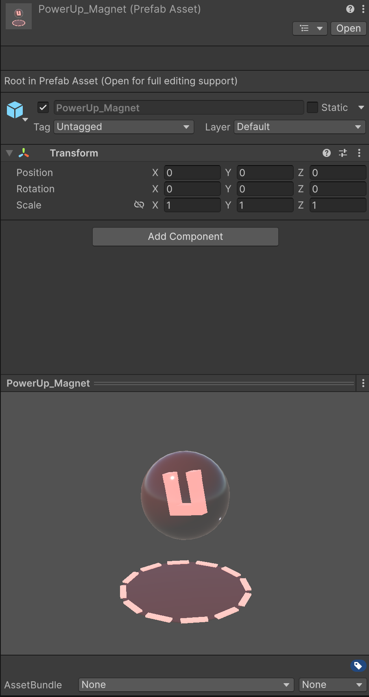
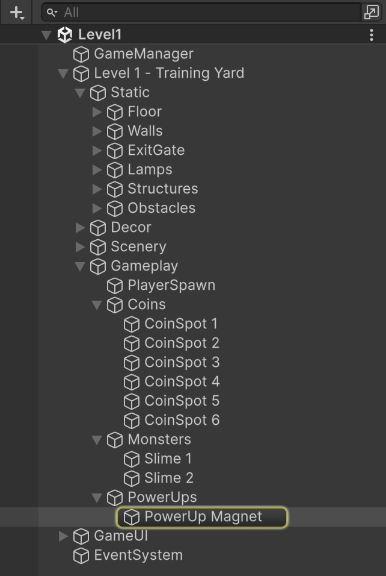
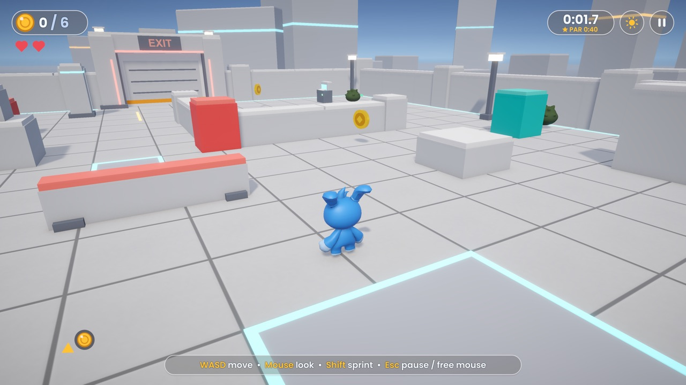

GOLD RUSH · Phase 8
Power-ups and effects
You add three glowing power-ups: SPEED (run faster), GHOST (monsters can't see you) and MAGNET (gold flies to you). You also add particle effects: sparkles when you take gold, dust behind your feet, a cloud when you get hit and confetti when you win. The PlayerMotor gets its final version.
1What you need
- Phase 7 is finished: the Slimes patrol and chase you, and you lose hearts.
If you start here, import
GoldRush_Phase07_Monsters.unitypackage. - The power-up models from the starter package:
Assets/GoldRush/Prefabs/Gameplay/PowerUp_Speed,PowerUp_Ghost,PowerUp_Magnet. - The helper script
Scripts/Helpers/Gameplay/FX.csfrom the Resources pack. No new Unity package: particles are built into Unity. - Open the scene
Assets/GoldRush/Scenes/Level1.unity.
New or changed files in this phase:
| File | Type or import? | What it does |
|---|---|---|
Gameplay/FX.cs | Import | All particle effects: sparkles, dust, confetti. |
Level/PowerUpSpot.cs | Type | Marks a place for a power-up. |
World/PowerUp.cs | Type | Makes the orb float and spin; knows its type and colour. |
Gameplay/PlayerMotor.cs | Type (replace) | The final file: speed boost, ghost look, dust, lantern, shop colours. |
Gameplay/GameManager.cs | Type (replace) | Power-up pickup, timers, magnet, effects. |
2How power-ups work
A power-up is a glowing orb that floats above a ring. Walk into it (closer than 1.6 m) and its effect starts for a few seconds.
| Power-up | Colour | Time | Effect |
|---|---|---|---|
| SPEED | cyan | 6 s | You move 1.55 × faster. A trail of cyan stars follows you. |
| GHOST | purple | 6 s | You turn see-through. Monsters can not see you, and a chasing monster gives up and searches. |
| MAGNET | red | 8 s | Every coin closer than 11 m flies to you. |
Like the coins, a power-up sits inside a marker: a PowerUpSpot with a PowerUp prefab as its child. The GameManager finds them when the level starts, and checks the distance every frame. No colliders.
3Import the FX script (particles)
A particle system shoots many tiny pictures (sparkles, dust, confetti) that move and fade out. FX.cs makes all of them in code.
- In Finder or Explorer, open the Resources pack folder
Scripts/Helpers/Gameplay/. - Drag
FX.csintoAssets/GoldRush/Scripts/Gameplay/in Unity. It is a new file. (IfFX.csis already there, do not drag it in again: Unity would add a second fileFX 1.cs. Open your file and paste the new text into it instead.)
You don't need to read the whole file. These are the functions the game calls:
| Function | What it does | Used by |
|---|---|---|
FX.Burst(pos, colorA, colorB, count, …) | One explosion of sparkles in two colours. Then it deletes itself. | power-up pickup |
FX.CoinBurst(pos) | A golden burst plus a soft glow. | coin pickup |
FX.Puff(pos, color) | A small soft cloud. | getting hit, falling down |
FX.Trail(parent, localPos, color, size, life) | A particle system that follows an object. You turn it on and off with emission.rateOverTime. | dust, speed trail |
FX.Confetti(pos) | 140 colourful paper bits shoot up. | winning |
GR_Particle material from the Particle field of GoldRushAssets. If particles show as pink squares, check that field.4Script: PowerUpSpot
The marker. It stores the type and draws a coloured ball in the Scene view.
- In
Assets/GoldRush/Scripts/Level/, create the scriptPowerUpSpotand type this code:
Assets/GoldRush/Scripts/Level/PowerUpSpot.cs
using UnityEngine;
namespace GoldRush
{
/// <summary>A power-up appears here: SPEED (faster), GHOST (monsters can't see you) or MAGNET (pulls coins).</summary>
public class PowerUpSpot : MonoBehaviour
{
public PowerType type = PowerType.Speed;
void OnDrawGizmos()
{
Color c = type == PowerType.Speed ? new Color(0.3f, 0.9f, 1f) : type == PowerType.Ghost ? new Color(0.7f, 0.55f, 1f) : new Color(1f, 0.3f, 0.3f);
Gizmos.color = c;
Gizmos.DrawWireSphere(transform.position + Vector3.up * 1.1f, 0.45f);
Gizmos.DrawLine(transform.position, transform.position + Vector3.up * 0.65f);
}
}
}PowerTypeis an enum fromData.cs:Speed,Ghost,Magnet.OnDrawGizmos()draws a wire ball 1.1 m above the ground (where the orb floats). Cyan = Speed, purple = Ghost, red = Magnet.
5Script: PowerUp
This script animates the orb and knows its type.
- In
Assets/GoldRush/Scripts/World/, create the scriptPowerUpand type this code:
Assets/GoldRush/Scripts/World/PowerUp.cs
using UnityEngine;
namespace GoldRush
{
/// <summary>Hovering glowing power-up orb with a ground ring. Pickup is distance-based elsewhere (no colliders).
/// The model is a PowerUp_* prefab.</summary>
public class PowerUp : MonoBehaviour
{
[Tooltip("SPEED, GHOST or MAGNET.")]
[SerializeField] PowerType type;
public PowerType Type { get => type; private set => type = value; }
public bool Collected { get; private set; }
[SerializeField] Transform visual, inner, ring;
float phase;
void Start()
{
// a power-up placed by hand: find its parts by name and give it its own bob timing
if (!visual) visual = transform.Find("Visual");
if (!inner && visual) inner = visual.Find("Inner");
if (!ring) ring = transform.Find("Ring");
if (phase == 0f) phase = Random.Range(0.01f, Mathf.PI * 2f);
}
public static Color ColorOf(PowerType t)
{
switch (t)
{
case PowerType.Speed: return new Color(0.2f, 0.9f, 1f);
case PowerType.Ghost: return new Color(0.76f, 0.56f, 1f);
default: return new Color(1f, 0.26f, 0.24f);
}
}
public static string NameOf(PowerType t)
{
switch (t)
{
case PowerType.Speed: return "SPEED";
case PowerType.Ghost: return "GHOST";
default: return "MAGNET";
}
}
void Update()
{
float t = Time.time;
if (visual)
{
visual.localPosition = new Vector3(0f, 1.1f + Mathf.Sin(t * 2f + phase) * 0.14f, 0f);
visual.localRotation = Quaternion.Euler(0f, t * 50f, 0f);
}
if (inner)
{
if (Type == PowerType.Ghost) inner.localRotation = Quaternion.Euler(0f, t * 160f, 0f);
else inner.localRotation = Quaternion.Euler(0f, t * 90f, Type == PowerType.Magnet ? Mathf.Sin(t * 1.5f) * 12f : 0f);
}
if (ring)
{
float s = 1f + Mathf.Sin(t * 3f + phase) * 0.06f;
ring.localScale = new Vector3(s, 1f, s);
ring.localRotation = Quaternion.Euler(0f, -t * 30f, 0f);
}
}
public void Collect()
{
if (Collected) return;
Collected = true;
Destroy(gameObject);
}
}
}typeis a private field that you set in the Inspector ([Tooltip]shows a hint when you point at it).Typelets other scripts read it; only the orb itself can change it (private set).Start(): if a field is empty,transform.Find("Visual")finds the child by its name. Then it picks a randomphase, so two orbs never move the same.ColorOf()andNameOf()give the colour and the name of each type. They arestatic: you call them on the class,PowerUp.ColorOf(PowerType.Ghost).Update()moves the orb up and down withMathf.Sin(14 cm), spins it 50° per second and makes the ring "breathe".Collect()deletes the orb.Collectedstops a second pickup.
Create() and Build(), which build an orb in code for the level builder.6Make the power-up prefabs work
- In the Project window, double-click
Assets/GoldRush/Prefabs/Gameplay/PowerUp_Magnet. It opens in prefab mode. - Look at the Hierarchy:
PowerUp_Magnet › Visual › Sphere, InnerandRing. - Select the root
PowerUp_Magnet. Click Add Component and choose Power Up. - Set Type =
Magnet. - Drag
Visualinto Visual,Visual › Innerinto Inner andRinginto Ring. - Leave prefab mode (the < arrow).
- Do the same for
PowerUp_Speed(TypeSpeed) andPowerUp_Ghost(TypeGhost).

7Place the MAGNET in Level 1
Level 1 has one power-up: a MAGNET. In phase 3 you made an empty marker for it.
- Select
Level 1 - Training Yard › Gameplay › PowerUps › PowerUp Magnet. Check its Position:-14.5, 0, -8.5. - Click Add Component and choose Power Up Spot. Set Type =
Magnet. A red wire ball appears in the Scene view. - Drag the
PowerUp_Magnetprefab from the Project window onto the marker. It becomes a child. - Select the child and set its Position to
0, 0, 0. - Save the scene.

8Add test power-ups
To test SPEED and GHOST, add one of each for now.
- Right-click
Level 1 - Training Yard › Gameplay › PowerUps→ Create Empty. Name itPowerUp Speed. Set its Position to2.5, 0, -6(on free floor, in front of the start). - Click Add Component → Power Up Spot. Set Type =
Speed. - Drag the
PowerUp_Speedprefab onto it. Set the child's Position to0, 0, 0. - Do the same for
PowerUp Ghostat10, 0, -6(near Slime 2), with TypeGhostand thePowerUp_Ghostprefab. - Save the scene.
PowerUp Speed and PowerUp Ghost, so Level 1 matches the real game. Or keep them – it's your level!9Update the PlayerMotor (final)
This is the final PlayerMotor: the same file as in the finished game.
- Open
Assets/GoldRush/Scripts/Gameplay/PlayerMotor.csand replace the whole file with this version:
Assets/GoldRush/Scripts/Gameplay/PlayerMotor.cs
using System.Collections;
using System.Collections.Generic;
using UnityEngine;
namespace GoldRush
{
/// <summary>Third-person player: CharacterController movement (collides with props), sprint/stamina,
/// power-up effects, hit knockback + invulnerability blink, dust, footsteps, win/lose poses.</summary>
[RequireComponent(typeof(CharacterController))]
public class PlayerMotor : MonoBehaviour
{
public float walkSpeed = 5f;
public float sprintSpeed = 8.2f;
public float acceleration = 20f;
public float turnSpeed = 560f;
public VirtualJoystick joystick;
public ThirdPersonCamera cam;
public float Stamina { get; private set; } = 1f;
public bool Exhausted { get; private set; }
public bool Sprinting { get; private set; }
public bool Frozen { get; set; }
public bool Invulnerable => Time.time < invulnUntil;
public Vector3 Velocity => velocity;
public Animator Anim => anim;
CharacterController cc;
float animSpeed = 1f;
Animator anim;
Transform model;
Vector3 velocity, knock;
float vy, invulnUntil, stepTimer, blinkTimer;
ParticleSystem dust, boostTrail;
Renderer[] renderers;
readonly Dictionary<Renderer, Material[]> originalMats = new Dictionary<Renderer, Material[]>();
bool ghostVisual;
public static PlayerMotor Create(Vector3 pos, float yaw)
{
var go = new GameObject("Player");
go.layer = 2; // Ignore Raycast: camera/enemy line-of-sight rays pass through the player
go.transform.SetPositionAndRotation(pos, Quaternion.Euler(0, yaw, 0));
var cc = go.AddComponent<CharacterController>();
var def = GameAssets.I.hero;
cc.height = Mathf.Max(1f, def.height);
cc.radius = 0.36f;
cc.center = new Vector3(0, cc.height * 0.5f + 0.02f, 0);
cc.skinWidth = 0.05f;
cc.stepOffset = 0.35f;
cc.slopeLimit = 50f;
var p = go.AddComponent<PlayerMotor>();
p.anim = CharacterFactory.BuildModel(def, go.transform);
p.model = p.anim.transform;
foreach (var t in go.GetComponentsInChildren<Transform>(true)) t.gameObject.layer = 2;
Cosmetics.Apply(p.anim, def, Save.Data.color, Save.Data.hat, true);
p.renderers = go.GetComponentsInChildren<Renderer>();
p.dust = FX.Trail(go.transform, new Vector3(0, 0.1f, -0.2f), new Color(0.9f, 0.78f, 0.6f, 0.55f), 0.7f, 0.7f);
p.boostTrail = FX.Trail(go.transform, new Vector3(0, 0.9f, -0.2f), new Color(0.4f, 0.95f, 1f, 0.8f), 0.35f, 0.5f, true);
return p;
}
void Awake()
{
cc = GetComponent<CharacterController>();
// a Player placed in the scene by hand: find its model (the child with the Animator)
if (!anim) anim = GetComponentInChildren<Animator>();
if (anim && !model) model = anim.transform;
}
/// <summary>Finishes a Player that was placed in the scene (Create() does all of this for a code-made one).</summary>
public void SetupPlaced()
{
gameObject.layer = 2; // Ignore Raycast: camera/enemy line-of-sight rays pass through the player
foreach (var t in GetComponentsInChildren<Transform>(true)) t.gameObject.layer = 2;
if (anim)
{
anim.applyRootMotion = false;
anim.cullingMode = AnimatorCullingMode.AlwaysAnimate;
Cosmetics.Apply(anim, GameAssets.I.hero, Save.Data.color, Save.Data.hat, true);
}
renderers = GetComponentsInChildren<Renderer>();
if (!dust) dust = FX.Trail(transform, new Vector3(0, 0.1f, -0.2f), new Color(0.9f, 0.78f, 0.6f, 0.55f), 0.7f, 0.7f);
if (!boostTrail) boostTrail = FX.Trail(transform, new Vector3(0, 0.9f, -0.2f), new Color(0.4f, 0.95f, 1f, 0.8f), 0.35f, 0.5f, true);
}
/// <summary>Moves the player (a CharacterController ignores teleports while it is enabled).</summary>
public void Teleport(Vector3 pos, float yaw)
{
if (!cc) cc = GetComponent<CharacterController>();
if (cc) cc.enabled = false;
transform.SetPositionAndRotation(pos, Quaternion.Euler(0, yaw, 0));
if (cc) cc.enabled = true;
}
/// <summary>Editor tooling (trailer recorder): when set, replaces keyboard / joystick input.</summary>
public static Vector2? ScriptedInput;
public static bool ScriptedSprint;
Vector2 ReadInput()
{
if (ScriptedInput.HasValue) return Vector2.ClampMagnitude(ScriptedInput.Value, 1f);
Vector2 v = joystick ? joystick.Value : Vector2.zero;
float kx = (Input.GetKey(KeyCode.D) || Input.GetKey(KeyCode.RightArrow) ? 1 : 0) - (Input.GetKey(KeyCode.A) || Input.GetKey(KeyCode.LeftArrow) ? 1 : 0);
float ky = (Input.GetKey(KeyCode.W) || Input.GetKey(KeyCode.UpArrow) ? 1 : 0) - (Input.GetKey(KeyCode.S) || Input.GetKey(KeyCode.DownArrow) ? 1 : 0);
if (kx != 0 || ky != 0) v = new Vector2(kx, ky).normalized;
return Vector2.ClampMagnitude(v, 1f);
}
void Update()
{
float dt = Time.deltaTime;
if (dt <= 0f) return;
var gm = GameManager.I;
bool canMove = !Frozen && gm != null && gm.State == GameState.Playing;
Vector2 input = canMove ? ReadInput() : Vector2.zero;
float yaw = cam ? cam.Yaw : 0f;
Vector3 dir = Quaternion.Euler(0, yaw, 0) * new Vector3(input.x, 0, input.y);
float mag = Mathf.Clamp01(dir.magnitude);
bool wantSprint = canMove && mag > 0.2f && (ScriptedSprint || (joystick && joystick.Held && joystick.Value.magnitude > 0.9f) || Input.GetKey(KeyCode.LeftShift) || Input.GetKey(KeyCode.RightShift));
if (Exhausted && Stamina > 0.35f) Exhausted = false;
Sprinting = wantSprint && !Exhausted && Stamina > 0f;
if (Sprinting)
{
Stamina = Mathf.Max(0f, Stamina - dt * 0.3f);
if (Stamina <= 0f) Exhausted = true;
}
else Stamina = Mathf.Min(1f, Stamina + dt * (mag > 0.1f ? 0.18f : 0.32f));
float mul = gm ? gm.SpeedMultiplier : 1f;
float speed = (Sprinting ? sprintSpeed : walkSpeed) * mul;
Vector3 targetVel = mag > 0.01f ? dir.normalized * (mag * speed) : Vector3.zero;
velocity = Vector3.MoveTowards(velocity, targetVel, acceleration * dt);
if (velocity.sqrMagnitude > 0.05f && !Frozen)
{
var targetRot = Quaternion.LookRotation(new Vector3(velocity.x, 0, velocity.z));
transform.rotation = Quaternion.RotateTowards(transform.rotation, targetRot, turnSpeed * dt);
}
if (cc.isGrounded && vy < 0) vy = -2f; else vy -= 25f * dt;
knock = Vector3.Lerp(knock, Vector3.zero, 1f - Mathf.Exp(-5f * dt));
if (cc.enabled) cc.Move((velocity + knock + Vector3.up * vy) * dt);
// animation (0 idle, 0.5 walk, 1 run)
float horiz = new Vector3(velocity.x, 0, velocity.z).magnitude;
float blend = horiz < 0.1f ? 0f : Mathf.Lerp(0.45f, 1f, Mathf.InverseLerp(2.5f, sprintSpeed, horiz));
if (anim && anim.runtimeAnimatorController) anim.SetFloat(AnimParams.Speed, blend, 0.15f, dt);
// play the walk/run cycle exactly as fast as the hero moves, so the feet don't slide
if (anim && !Frozen)
{
float target = GameAssets.I.hero.PlaybackSpeed(blend, horiz);
animSpeed = Mathf.Lerp(animSpeed, target, 1f - Mathf.Exp(-5f * dt)); // ease, never jump
anim.speed = animSpeed;
}
// footsteps
if (horiz > 1f && cc.isGrounded)
{
stepTimer -= dt * horiz / 5f;
if (stepTimer <= 0f)
{
stepTimer = 0.36f;
AudioFX.Play("step", Sprinting ? 0.55f : 0.35f, Random.Range(0.9f, 1.1f));
}
}
// dust + boost trail
if (dust) { var em = dust.emission; em.rateOverTime = horiz > 1f ? (Sprinting ? 28f : 9f) : 0f; }
if (boostTrail) { var em = boostTrail.emission; em.rateOverTime = gm && gm.SpeedActive && horiz > 0.5f ? 35f : 0f; }
// invulnerability blink
if (Invulnerable)
{
blinkTimer -= dt;
if (blinkTimer <= 0f) { blinkTimer = 0.09f; SetVisible(!renderers[0].enabled); }
}
else if (renderers != null && renderers.Length > 0 && !renderers[0].enabled) SetVisible(true);
bool ghost = gm && gm.GhostActive;
if (ghost != ghostVisual) SetGhost(ghost);
}
void SetVisible(bool v)
{
if (renderers == null) return;
foreach (var r in renderers) if (r && !(r is ParticleSystemRenderer)) r.enabled = v;
}
void SetGhost(bool on)
{
ghostVisual = on;
var ghostMat = Mats.Transparent(new Color(0.65f, 0.6f, 1f, 0.32f), 0.9f);
foreach (var r in GetComponentsInChildren<Renderer>(true))
{
if (r is ParticleSystemRenderer) continue;
if (on)
{
if (!originalMats.ContainsKey(r)) originalMats[r] = r.sharedMaterials;
var arr = new Material[r.sharedMaterials.Length];
for (int i = 0; i < arr.Length; i++) arr[i] = ghostMat;
r.sharedMaterials = arr;
}
else if (originalMats.TryGetValue(r, out var orig)) r.sharedMaterials = orig;
}
if (!on) originalMats.Clear();
}
public void Hit(Vector3 from, float invulnSeconds)
{
Vector3 d = transform.position - from; d.y = 0;
if (d.sqrMagnitude < 0.01f) d = -transform.forward;
knock = d.normalized * 13f;
invulnUntil = Time.time + invulnSeconds;
if (anim) anim.SetTrigger(AnimParams.Hit);
FX.Puff(transform.position + Vector3.up * 1f, new Color(1f, 0.9f, 0.8f, 0.8f), 14, 0.9f);
}
public void PlayVictory()
{
Frozen = true;
velocity = Vector3.zero;
StartCoroutine(VictoryCo());
}
IEnumerator VictoryCo()
{
if (anim) anim.SetFloat(AnimParams.Speed, 0f);
// turn to face the camera, then wave (the "Win" clip)
Quaternion start = transform.rotation;
Vector3 toCam = cam ? cam.transform.position - transform.position : -transform.forward;
toCam.y = 0;
Quaternion face = toCam.sqrMagnitude > 0.01f ? Quaternion.LookRotation(toCam) : start;
for (float t = 0; t < 1f; t += Time.deltaTime / 0.35f)
{
transform.rotation = Quaternion.Slerp(start, face, t);
yield return null;
}
if (anim) { anim.speed = 1f; anim.SetTrigger(AnimParams.Win); }
}
public void PlayCaught()
{
Frozen = true;
velocity = Vector3.zero;
StartCoroutine(CaughtCo());
}
IEnumerator CaughtCo()
{
SetVisible(true);
if (anim) { anim.speed = 1f; anim.SetFloat(AnimParams.Speed, 0f); anim.SetTrigger(AnimParams.Die); }
yield return new WaitForSeconds(0.5f);
FX.Puff(transform.position + Vector3.up * 0.2f, new Color(0.9f, 0.78f, 0.6f, 0.8f), 18, 1.1f);
}
/// <summary>A warm lantern spotlight follows the hero (and a soft fill light). Both fade in at night.</summary>
public void AddLantern()
{
var spot = new GameObject("Lantern").AddComponent<Light>();
spot.transform.SetParent(transform, false);
spot.transform.localPosition = new Vector3(0f, 5.5f, -1.5f);
spot.transform.LookAt(transform.position + transform.forward * 1.8f);
spot.type = LightType.Spot;
spot.color = new Color(1f, 0.8f, 0.5f);
spot.intensity = 22f;
spot.range = 14f;
spot.spotAngle = 62f;
spot.innerSpotAngle = 30f;
spot.shadows = LightShadows.Soft;
DayNight.RegisterNightLight(spot);
var fill = CharacterFactory.AddGlow(transform, new Color(1f, 0.85f, 0.6f), 1.35f, 0.5f);
fill.transform.localPosition = new Vector3(0f, 2.4f, -1.2f); // above & behind: soft rim light, not a face flash
fill.range = 4f;
DayNight.RegisterNightLight(fill);
}
}
}What is new:
gm.SpeedMultiplieris 1.55 during SPEED, else 1. It multiplies your walk and sprint speed.dustandboostTrailare twoFX.Trailparticle systems on the player, made inSetupPlaced(). Dust comes out when you move (28 per second when sprinting, 9 when walking). The cyan stars come out only during SPEED.SetGhost()swaps all your materials for one see-through purple material during GHOST, and puts the old ones back after. TheDictionary originalMatsremembers them.FX.Puffmakes a little cloud when you get hit and when you fall down.AddLantern(): a warm spotlight above the hero. It shines only at night (DayNight.RegisterNightLight).Cosmetics.Applyputs your shop colour and hat on the hero. Now the colour you bought in the shop shows in the level too.Create()makes a whole Player in code. Your scene has a Player, so the game does not use it.
'GameManager' does not contain a definition for 'SpeedMultiplier') are normal. They go away after step 10.10Update the GameManager
- Open
Assets/GoldRush/Scripts/Gameplay/GameManager.csand replace the whole file with this phase 8 version:
Assets/GoldRush/Scripts/Gameplay/GameManager.cs
using System.Collections;
using System.Collections.Generic;
using UnityEngine;
namespace GoldRush
{
public enum GameState { Intro, Playing, Paused, Won, Lost }
public struct RunResult
{
public bool won;
public int stars;
public bool parBeaten, noHits;
public float time, best, par;
public bool newBest;
public int collected, total;
public int goldEarned, bonus;
public bool hasNext;
}
/// <summary>Gameplay scene root: finds the level, owns game state, rules, scoring and saving.
/// Phase 8 version: no HUD yet (phase 9), so it reports to the Console.</summary>
public class GameManager : MonoBehaviour
{
public static GameManager I { get; private set; }
public const float SpeedDuration = 6f, GhostDuration = 6f, MagnetDuration = 8f;
public LevelDef Def { get; private set; }
public GameState State { get; private set; } = GameState.Intro;
public float Elapsed { get; private set; }
public int Collected { get; private set; }
public int TotalCoins { get; private set; }
public int Lives { get; private set; }
public int MaxLives { get; private set; }
public int Hits { get; private set; }
public PlayerMotor Player { get; private set; }
public ThirdPersonCamera Cam { get; private set; }
public ExitGate Gate { get; private set; }
public float SpeedLeft { get; private set; }
public float GhostLeft { get; private set; }
public float MagnetLeft { get; private set; }
public bool SpeedActive => SpeedLeft > 0f;
public bool GhostActive => GhostLeft > 0f;
public bool MagnetActive => MagnetLeft > 0f;
public float SpeedMultiplier => SpeedActive ? 1.55f : 1f;
readonly List<Coin> coins = new List<Coin>();
readonly List<PowerUp> powerUps = new List<PowerUp>();
readonly List<EnemyAI> enemies = new List<EnemyAI>();
Vector3 spawn;
float spawnYaw, arenaHalf;
bool chasedLastFrame;
void Awake()
{
I = this;
Application.targetFrameRate = 60;
Time.timeScale = 1f;
// pressing Play directly in Level2.unity etc. should play that level
string active = UnityEngine.SceneManagement.SceneManager.GetActiveScene().name;
for (int i = 0; i < Levels.All.Length; i++)
if (Levels.All[i].scene == active) GameSession.LevelIndex = i;
Def = GameSession.Current;
}
// ---------------------------------------------------------------- mouse cursor (computer only)
/// <summary>True on computers: hide + lock the cursor while playing so the mouse turns the camera.</summary>
static bool UseMouseLook => !Application.isMobilePlatform && !Input.touchSupported;
static void LockCursor(bool locked)
{
if (!UseMouseLook) return;
Cursor.lockState = locked ? CursorLockMode.Locked : CursorLockMode.None;
Cursor.visible = !locked;
}
void OnApplicationFocus(bool focus)
{
if (focus && State == GameState.Playing) LockCursor(true);
}
void OnDestroy()
{
LockCursor(false);
if (I == this) I = null;
Time.timeScale = 1f;
AudioFX.SetTension(false);
}
void Start()
{
Build();
if (Player && Cam) StartCoroutine(IntroCo());
}
void Build()
{
AudioFX.StartMusic();
// the hand-made level: the object with the LevelScene component
var handMade = FindAnyObjectByType<LevelScene>();
if (!handMade) { Debug.LogError("[GoldRush] No LevelScene in this scene. Add it to the level root."); return; }
LevelFromScene(handMade);
// the Player and the camera are placed in the scene
Player = FindAnyObjectByType<PlayerMotor>();
if (!Player) { Debug.LogError("[GoldRush] No Player (PlayerMotor) in this scene."); return; }
Player.Teleport(spawn, spawnYaw);
Player.SetupPlaced();
Cam = FindAnyObjectByType<ThirdPersonCamera>();
if (!Cam) { Debug.LogError("[GoldRush] No camera with ThirdPersonCamera in this scene."); return; }
Cam.Init(Player.transform, spawnYaw);
EnvironmentSetup.Apply(Cam.GetComponent<Camera>(), false, Def.night);
Player.AddLantern(); // only visible at night (DayNight fades it)
Player.cam = Cam;
// monster prefabs placed in the scene by hand
foreach (var e in FindObjectsByType<EnemyAI>())
{
if (enemies.Contains(e)) continue;
e.SetupPlaced(Def.enemySpeed, arenaHalf, null); // phase 9: the "!" bubbles
enemies.Add(e);
}
TotalCoins = coins.Count;
MaxLives = Lives = Mathf.Max(1, Def.lives);
Debug.Log($"[GoldRush] {Def.title}: collect {TotalCoins} coins. Lives: {Lives}. Par time: {Def.parTime:0} s. (The HUD comes in phase 9.)");
Fader.FadeIn();
}
/// <summary>Reads a hand-made level: marker objects placed in the Hierarchy (see Scripts/Level/).</summary>
void LevelFromScene(LevelScene scene)
{
// rebuild the NavMesh so students can move walls around freely
foreach (var surface in scene.GetComponentsInChildren<Unity.AI.Navigation.NavMeshSurface>()) surface.BuildNavMesh();
arenaHalf = scene.arenaHalf;
Gate = scene.GetComponentInChildren<ExitGate>();
var start = scene.GetComponentInChildren<PlayerSpawn>();
spawn = start ? start.transform.position : Vector3.zero;
spawnYaw = start ? start.transform.eulerAngles.y : 0f;
foreach (var c in scene.GetComponentsInChildren<CoinSpot>())
{
var placed = c.GetComponentInChildren<Coin>();
if (placed) coins.Add(placed); // a Coin prefab placed by hand
else Debug.LogWarning("[GoldRush] " + c.name + " has no Coin inside.");
}
foreach (var pu in scene.GetComponentsInChildren<PowerUpSpot>())
{
var placed = pu.GetComponentInChildren<PowerUp>();
if (placed) powerUps.Add(placed); // a PowerUp prefab placed by hand
else Debug.LogWarning("[GoldRush] " + pu.name + " has no PowerUp inside.");
}
if (coins.Count == 0) Debug.LogWarning("[GoldRush] This level has no coins. Put a Coin inside each CoinSpot.");
}
IEnumerator IntroCo()
{
State = GameState.Intro;
Cam.PlayIntro(2.8f); // the camera swoops down behind the hero
yield return new WaitForSeconds(2.8f); // phase 9: the 3-2-1-GO countdown
Debug.Log("[GoldRush] GO!");
State = GameState.Playing;
LockCursor(true);
}
void Update()
{
if (Input.GetKeyDown(KeyCode.Escape) || Input.GetKeyDown(KeyCode.P))
{
if (State == GameState.Playing) Pause();
else if (State == GameState.Paused) Resume();
}
if (State != GameState.Playing || !Player) return;
// clicked back into the game window after the cursor was freed (e.g. alt-tab)
if (UseMouseLook && Cursor.lockState != CursorLockMode.Locked && Input.GetMouseButtonDown(0)) LockCursor(true);
float dt = Time.deltaTime;
Elapsed += dt;
SpeedLeft = Mathf.Max(0, SpeedLeft - dt);
GhostLeft = Mathf.Max(0, GhostLeft - dt);
MagnetLeft = Mathf.Max(0, MagnetLeft - dt);
Vector3 pp = Player.transform.position + Vector3.up * 1f;
for (int i = coins.Count - 1; i >= 0; i--)
{
var c = coins[i];
if (c == null || c.Collected) { coins.RemoveAt(i); continue; }
Vector3 d = c.transform.position - pp;
float sq = d.sqrMagnitude;
if (MagnetActive && sq < 11f * 11f)
{
float dist = Mathf.Sqrt(sq);
c.transform.position = Vector3.MoveTowards(c.transform.position, pp, (7f + (11f - dist) * 2.2f) * dt);
sq = (c.transform.position - pp).sqrMagnitude;
}
if (sq < 1.45f * 1.45f) { coins.RemoveAt(i); CollectCoin(c); }
}
for (int i = powerUps.Count - 1; i >= 0; i--)
{
var p = powerUps[i];
if (p == null || p.Collected) { powerUps.RemoveAt(i); continue; }
if ((p.transform.position + Vector3.up - pp).sqrMagnitude < 1.6f * 1.6f) { powerUps.RemoveAt(i); CollectPowerUp(p); }
}
if (Gate && Gate.IsOpen)
{
Vector3 d = Gate.WinPoint - Player.transform.position; d.y = 0;
if (d.sqrMagnitude < 2.4f * 2.4f) Win();
}
bool chased = false;
foreach (var e in enemies) if (e && e.IsChasing) { chased = true; break; }
if (chased != chasedLastFrame) { chasedLastFrame = chased; AudioFX.SetTension(chased); }
}
void OnApplicationPause(bool paused)
{
if (paused && State == GameState.Playing) Pause();
}
// ---------------------------------------------------------------- pickups
void CollectCoin(Coin c)
{
Vector3 pos = c.transform.position;
c.Collect();
Collected++;
FX.CoinBurst(pos);
AudioFX.Play("coin", 1f, 1f + 0.05f * (Collected % 5));
Debug.Log($"[GoldRush] Coin {Collected} / {TotalCoins}");
if (Collected >= TotalCoins) AllCollected();
}
void AllCollected()
{
if (Gate) Gate.Open();
AudioFX.Play("gate");
Cam.Shake(0.12f, 0.8f);
Debug.Log("[GoldRush] ALL GOLD COLLECTED! The gate is open - run to the EXIT!");
foreach (var e in enemies) if (e) e.Enrage(1.1f);
}
void CollectPowerUp(PowerUp p)
{
var type = p.Type;
Vector3 pos = p.transform.position + Vector3.up;
p.Collect();
Color col = PowerUp.ColorOf(type);
FX.Burst(pos, col, Color.white, 30, 2f, 6f, 0.4f, 0.8f, 0.2f, true);
AudioFX.Play("power");
string desc;
switch (type)
{
case PowerType.Speed: SpeedLeft = SpeedDuration; desc = "Super speed!"; break;
case PowerType.Ghost: GhostLeft = GhostDuration; desc = "Monsters can't see you!"; break;
default: MagnetLeft = MagnetDuration; desc = "Gold flies to you!"; break;
}
Debug.Log("[GoldRush] " + PowerUp.NameOf(type) + ": " + desc);
}
// ---------------------------------------------------------------- hits
public void OnPlayerCaught(EnemyAI enemy)
{
if (State != GameState.Playing || !Player || Player.Invulnerable) return;
Hits++;
Lives--;
AudioFX.Play("hit");
Cam.Shake(0.45f, 0.45f);
if (Lives <= 0) { Lose(); return; }
Player.Hit(enemy.transform.position, 2.2f);
enemy.Stun(2.6f);
Debug.Log("[GoldRush] OUCH! " + (Lives == 1 ? "Last life - be careful!" : "Lives left: " + Lives));
}
// ---------------------------------------------------------------- end states
void Lose()
{
State = GameState.Lost;
LockCursor(false);
Player.PlayCaught();
AudioFX.SetTension(false);
var d = Save.Data;
d.gold += Collected;
Save.Persist();
var r = new RunResult
{
won = false, collected = Collected, total = TotalCoins, time = Elapsed, par = Def.parTime,
goldEarned = Collected, hasNext = false,
};
StartCoroutine(LoseCo(r));
}
IEnumerator LoseCo(RunResult r)
{
Time.timeScale = 0.3f;
yield return new WaitForSecondsRealtime(1.1f);
Time.timeScale = 1f;
AudioFX.Duck(0.7f, 2f);
AudioFX.Play("lose");
Debug.Log($"[GoldRush] CAUGHT! Gold: {r.collected} / {r.total}, +{r.goldEarned} gold. Trying again...");
yield return new WaitForSeconds(2f); // phase 9: the lose dialog with RETRY and MENU
Restart();
}
void Win()
{
State = GameState.Won;
LockCursor(false);
AudioFX.SetTension(false);
Player.PlayVictory();
FX.Confetti(Player.transform.position + Vector3.up * 0.5f);
Cam.Shake(0.1f, 0.4f);
AudioFX.Duck(0.7f, 2.5f);
AudioFX.Play("win");
var d = Save.Data;
var r = new RunResult
{
won = true, collected = Collected, total = TotalCoins, time = Elapsed, par = Def.parTime,
parBeaten = Elapsed <= Def.parTime, noHits = Hits == 0,
};
r.stars = 1 + (r.parBeaten ? 1 : 0) + (r.noHits ? 1 : 0);
r.goldEarned = Collected + r.stars * 5;
if (Def.daily)
{
if (!d.dailyCleared) { r.bonus = 50; d.dailyCleared = true; }
r.newBest = d.dailyBest < 0 || Elapsed < d.dailyBest;
if (r.newBest) d.dailyBest = Elapsed;
r.best = d.dailyBest;
r.hasNext = false;
}
else
{
int idx = GameSession.LevelIndex;
var lp = d.levels[idx];
r.newBest = lp.bestTime < 0 || Elapsed < lp.bestTime;
if (r.newBest) lp.bestTime = Elapsed;
lp.stars = Mathf.Max(lp.stars, r.stars);
r.best = lp.bestTime;
d.unlocked = Mathf.Clamp(Mathf.Max(d.unlocked, idx + 2), 1, Levels.All.Length);
r.hasNext = GameSession.HasNext;
}
d.gold += r.goldEarned + r.bonus;
Save.Persist();
StartCoroutine(WinCo(r));
}
IEnumerator WinCo(RunResult r)
{
yield return new WaitForSeconds(1.5f);
Debug.Log($"[GoldRush] LEVEL COMPLETE! Stars: {r.stars}, time {r.time:0.0} s (par {r.par:0} s), best {r.best:0.0} s, +{r.goldEarned + r.bonus} gold.");
yield return new WaitForSeconds(2.5f); // phase 9: the win dialog with NEXT, RETRY and MENU
BackToMenu();
}
// ---------------------------------------------------------------- navigation
public void Pause()
{
if (State != GameState.Playing) return;
State = GameState.Paused;
LockCursor(false);
Time.timeScale = 0f;
Debug.Log("[GoldRush] Paused. Press Esc or P to play on."); // phase 9: the pause dialog
}
public void Resume()
{
if (State != GameState.Paused) return;
State = GameState.Playing;
Time.timeScale = 1f;
LockCursor(true);
}
public void Restart() { Time.timeScale = 1f; Fader.Load(UnityEngine.SceneManagement.SceneManager.GetActiveScene().name); }
public void BackToMenu() { Time.timeScale = 1f; Fader.Load(Scenes.Menu); }
}
}What is new:
- Find:
LevelFromScene()finds everyPowerUpSpotand thePowerUpinside it. - Pickup: in
Update(), if you are closer than 1.6 m to an orb,CollectPowerUp()runs. It sets the timer (SpeedLeft = 6,GhostLeft = 6orMagnetLeft = 8), plays"power"and makes a burst in the orb's colour. - Timers: every frame, the three timers go down by
Time.deltaTime.Mathf.Max(0, …)stops them at 0.GhostActiveis simplyGhostLeft > 0. - Magnet: coins closer than 11 m move to you with
Vector3.MoveTowards. The closer they are, the faster they fly: 7 + (11 − distance) × 2.2 m/s. - Ghost: there is no ghost code here. EnemyAI reads
gm.GhostActive: thenVision()returns false, and a chasing monster starts to search. - Effects:
FX.CoinBurstwhen you take a coin,FX.Confettiwhen you win, andPlayer.AddLantern()inBuild().
11▶ Press Play
Press Play. Keep the Console open.
- The orbs float and spin. Each ring slowly turns.
- Walk: a little dust comes out behind your feet.
- Take SPEED: sparkles, a sound, the Console says
SPEED: Super speed!, and you are much faster with a star trail for 6 s. - Take GHOST and walk in front of a Slime: you are see-through, and it does not see you.
- Take MAGNET: coins up to 11 m away fly to you.
- Take a coin: golden sparkles. Get hit: a small cloud.
- Take all gold and win: confetti!
- At night a warm lantern light follows the hero. Switch day/night in the main menu to compare.

12Common problems
| Problem | Fix |
|---|---|
Error: The name 'FX' does not exist | Import FX.cs (step 3). |
Error: 'GameManager' does not contain a definition for 'SpeedMultiplier' | Replace the GameManager (step 10). |
Error: 'PlayerMotor' does not contain a definition for 'AddLantern' | Replace the PlayerMotor (step 9). |
Error: The type 'PowerUp' already contains a definition… | You have two PowerUp.cs files. Search the Project window for PowerUp and delete the extra one. |
Console: PowerUp Magnet has no PowerUp inside. | Drag the PowerUp prefab onto the marker (step 7). |
| The orb does not float or spin. | The prefab has no Power Up component, or its Visual and Ring fields are empty (step 6). |
| I walk into the orb and nothing happens. | The orb must be at local position 0, 0, 0 in a marker on the floor. Walk right through it. |
| SPEED gives the wrong effect (for example MAGNET). | The Type on the PowerUp prefab is wrong (step 6). |
| Monsters still see me in GHOST mode. | Check that EnemyAI.cs is the helper from phase 7: Vision() starts with if (gm.GhostActive) return false;. |
| Particles are pink squares. | Open GoldRushAssets and set Particle = GR_Particle. |
| No dust behind the player. | Move faster than 1 m/s. Check that you replaced the PlayerMotor (step 9). |
Checkpoint package: GoldRush_Phase08_PowerUps.unitypackage – the project at the end of this phase.